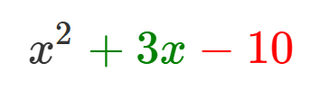

日本語/Japanese
日本語/Japanese
因数分解とは
因数分解とは、1つの足し算や引き算が混ざっている式を、
カッコでまとめてしまうことです。
\[3x^3+9x^2-6x\]
この式、とても足し算や引算があって、めんどくさいですよね。
それでは、この式を因数分解してみましょう。
因数分解の手順
まずは、共通因数と言われる、
この式のすべての項に含まれる因数を探します。
この式は、3で割ることができます。なので、まずは3でくくってみましょう。
\(3x^3+9x^2-6x=3(x^3+3x^2-2x)\)
これで、この式は、3でくくることが出来ました。
また、この式は更にxで割ることもできます。なので、こうすることもできます。
\(3(x^3+3x^2-2x)=3x(x^2+3x-2)\)
これで、この式は、xでくくることもできました。
これで、この式は、因数分解が完了しました。
こんなことをして何の意味があるのか、という疑問もあるはずですが、
このゲームでは、この動作をメインテーマにしています。
因数分解の公式
次に、この式を因数分解してみましょう。
\[x^2+3x-10\]
一見、どこにも共通因数がないので、この式はそのままです。
...と言いたいじゃないですか。
実は、因数分解って、ただただ共通因数をくくりだすだけじゃダメなんです。
こんな公式があります。
- \(x^2+(a+b)x+ab=(x+a)(x+b)\)
- \(x^2-(a+b)x+ab=(x-a)(x-b)\)
- \(a^2+2ab+b^2=(a+b)^2\)
- \(a^2-2ab+b^2=(a-b)^2\)
...何か急に難しくなってきましたね。でも安心してください。
用は、こういうことをすればよいだけです。
...
まず、この式 \(x^2+3x-10\) において、画像のような所を見ます。

このとき、足して緑色、掛けて赤色になるような数を二つ、見つけ出します。
そのような数は、ここでは-2と5です。
この二つの数が分かったら、この式を因数分解できます。
\[x^2+3x-10=(x-2)(x+5)\]
上の式で、先ほど出した数がここで出てきましたね。
これで、この式は、因数分解が完了しました。
素因数分解とは
このゲームをマスターするためには、因数分解のほかに素因数分解が必要です。
素数とは
素数とは、「1と自分自身以外でしか割れない数(1を除く)」数のことです。
例えば、
\[2,3,5,7,11,13,17,21,23,29\]
こんな感じで、1と自分自身でしか割れない数が素数です。
素因数分解とは
素因数分解とは、ある自然数を、素数だけの掛け算に直すことです。
例えば、300を素数だけの掛け算に直すにはどうすればよいでしょうか。
答えは、どんどん素数で割っていくことです。
この手順に従って、解いてみましょう。
- まず、一番小さい素数2で割ってみる。
- それで割れなかったら、次に小さい素数で割ってみる。
- 割り切れたら、またその数で割ってみる。
- これ以上割り切れなくなるまで繰り返す。
- 同じ素因数を指数でまとめる
これで300を素因数分解すると...
- \(300\)は素数\(2\)で割り切れる。なので、\(300=150\times2\)。
- \(150\)は素数\(2\)で割り切れる。なので、\(300=75\times2\times2\)。
- \(75\)は素数\(3\)で割り切れる。なので、\(300=25\times2\times2\times3\)。
- \(25\)は素数\(5\)で割り切れる。なので、\(300=2\times2\times3\times5\times5\)
- これ以上素因数分解できないので、\(300=2\times2\times3\times5\times5\)の同じ積を指数でまとめる。
このとおりにすると、300は
\[2^2\times3\times5^2\]
と素因数分解できます。
まとめ
単純な事です。因数分解とは
- たくさんの足し算や引き算が混じっている式を、カッコでまとめてしまうこと。
- 特に、「共通因数」と呼ばれる、全ての項に含まれる数を見つけて、カッコでくくる。
- 共通因数がない時は、公式でくくると良い。
- ある自然数を素数の掛け算に直すことを素因数分解という。
- 素数とは、1を除く、1と自分自身でしか割れない自然数のこと。
これで終わりです！やったね！
英語/English
What is Factorization?
Factorization is the process of encapsulating an expression that involves addition or subtraction within parentheses.
\[3x^3+9x^2-6x\]
This expression is quite cumbersome with all its additions and subtractions, isn't it?
Now, let's try to factorize this expression.
Steps of Factorization
First, we look for a common factor,
which is a factor included in all terms of the expression.
This expression can be divided by 3. So, let's first factor out 3.
\(3x^3+9x^2-6x=3(x^3+3x^2-2x)\)
With this, we have factored out 3 from the expression.
Furthermore, this expression can also be divided by x. So, we can do this as well:
\(3(x^3+3x^2-2x)=3x(x^2+3x-2)\)
With this, we have also factored out x from the expression.
Now, the factorization of this expression is complete.
You might wonder what the point of doing this is,
but in this game, this operation is the main theme.
Factorization Formulas
Next, let's try to factorize this expression:
\[x^2+3x-10\]
At first glance, there are no common factors, so this expression remains as is.
...or so you would think.
Actually, factorization isn't just about pulling out common factors.
There are formulas like these:
- \(x^2+(a+b)x+ab=(x+a)(x+b)\)
- \(x^2-(a+b)x+ab=(x-a)(x-b)\)
- \(a^2+2ab+b^2=(a+b)^2\)
- \(a^2-2ab+b^2=(a-b)^2\)
...things suddenly got a bit more complicated. But don't worry.
Basically, this is all you need to do.
...
First, for this expression \(x^2+3x-10\), look at the image below.
At this point, find two numbers that add up to green and multiply to red.
In this case, the numbers are -2 and 5.
Once you know these two numbers, you can factorize the expression.
\[x^2+3x-10=(x-2)(x+5)\]
The numbers we found earlier appear here in the final expression.
With this, the factorization of this expression is complete.
What is Prime Factorization?
Prime factorization is the process of converting a natural number into a product of only prime numbers.
For example, how would you convert 300 into a product of only prime numbers?
The answer is to continuously divide by prime numbers.
Let's follow this procedure and solve it.
- First, divide by the smallest prime number, 2.
- If it doesn't divide, then try the next smallest prime number.
- If it divides, divide by that number again.
- Repeat this until no more divisions are possible.
- Group the same prime factors using exponents.
Following these steps to factorize 300...
- \(300\) is divisible by the prime number \(2\), so \(300 = 150 \times 2\).
- \(150\) is divisible by the prime number \(2\), so \(300 = 75 \times 2 \times 2\).
- \(75\) is divisible by the prime number \(3\), so \(300 = 25 \times 2 \times 2 \times 3\).
- \(25\) is divisible by the prime number \(5\), so \(300 = 2 \times 2 \times 3 \times 5 \times 5\)
- Since \(5\) cannot be further factorized, group the same factors using exponents: \(300 = 2^2 \times 3 \times 5^2\).
Following this method, 300 can be factorized as:
\[2^2 \times 3 \times 5^2\]
Summary
It's simple. Factorization is:
- Encapsulating an expression that involves lots of additions and subtractions within parentheses.
- Especially by finding a 'common factor' that is included in all terms and encapsulating it.
- If there is no common factor, using a formula to encapsulate is a good approach.
- The reworking of a natural number into a prime number multiplier is called prime factorization.
- A prime number is a natural number that is divisible only by 1 and itself, excluding 1.
That's it! Well done!